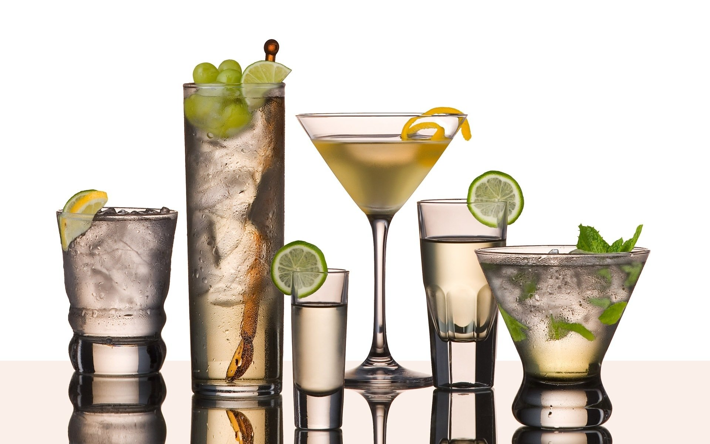

Здоровье, молодость и красота – это реальные требования каждого человека к самому себе. При этом не каждое блюдо может помочь в достижении этих логичных желаний. Не каждое, но коктейли из овощей и фруктов могут.
Научно доказано, что витамины и минералы намного лучше усваиваются из соков, нежели из цельных плодовых единиц. Более того, в соке не содержатся те нитраты и вредные удобрения, которые частенько задерживаются на поверхности, в мякоти овощей и фруктов.
Предлагаем отведать несколько удивительных коктейлей, которые приблизят ваши мечты о вечной молодости и красоте!
Тыквенный коктейль
Это чудо рекомендовано пить перед сном, поскольку ничто так не успокоит как бокал тыквенного коктейля. Антисрессовый, богатый микроэлементами коктейль окажется весьма кстати, в том числе и для мужчин страдающих воспалением предстательной железы.
Приготовление: необходимо смешать в блендере до образования пены: 3 столовые ложки тыквенного пюре, 1 замороженный банан, 150 мл апельсинового сока и 1 шарик ванильного мороженного.
Важно знать! Коктейль рекомендован всем без ограничений, однако аллергики должны быть осторожны: в его состав входит апельсиновый сок!
Свекольный коктейль
Коктейль рекомендован каждому по окончании трудового дня.
Умственный труд изрядно расходует йод, а он, в свою очередь в большом количестве содержится в свекольном соке. Бетаин, железо, фолиевая кислота помогут кислороду добрать до уставшего мозга и вдохновить его на свежие мысли. А обилие витаминов С, PP, В, P поможет усталому телу расслабиться. Более того, пектины способствуют нейтрализации токсинов, которые образовались в кишечнике за сутки.
Приготовление: в блендере смешиваем ¼ cвеклы с соком и мякотью одного апельсина, двух морковей и соком кусочка свежего имбиря.
Важно знать! Свекольный сок – единственный, который нельзя пить сразу после отжима, поскольку летучие токсические вещества, которые образуются при соприкосновении молекул сока с воздухом, вызывают тошноту, головокружение, вплоть до коматозного состояния! Свекольный сок должен отстояться несколько часов!
Томатный коктейль
Этот особенный напиток хорош и попросту необходим перед банкетом или другим мероприятием, в ходе которого печень получит пищевую либо алкогольную нагрузку. Секрет в том, что томаты богаты калием, который повышает выработку желудочного сока и нормализует работу сердца. Фитонциды, которые в большом количестве содержаться в томатном соке устраняют процессы брожения в кишечнике, а органические кислоты активизируют обмен веществ.
Приготовление: 250 мл свежевыжатого томатного сока смешать с соком одного грейпфрута. В коктейль добавить столовую ложку красного сладкого перца и мелко нарубленную петрушку.
Морковный коктейль
Этот коктейль идеален для людей, которые привыкли уделять внимание спортивным тренировкам, поэтому он будет уместен до или во время физических нагрузок. Он содержит максимальный набор витаминов и микроэлементов, которые помогают кислороду добираться до мышц и головного мозга. Морковный сок принято считать санитаром организма, который помогает бороться с холестерином, печеночными токсинами, очищает кожу и «активизирует зрение». Более того, те, кто пьет морковный сок, могут получить весьма ровный золотистый загар.
Приготовление: пропустить через соковыжималку 4 моркови, апельсин. Взбить в бленедере полученный сок с 300мл нежирных сливок, 4 яичными желтками.
Важно знать! Не стоит слишком увлекаться употреблением соков или коктейлей, содержащих морковный сок, поскольку передозировка чревата апатией, слабостью и появлением желтых пятен по всему телу.
Арбузный коктейль
Этот коктейль – настоящий лекарь организма. Он хорош после бурных вечеринок, в период глубоких депрессий, любых неполадок печени. Этот напиток на все 100% промывает почки, снижает уровень холестерина и подходит даже тем, кто успел облучиться радиоактивными излучениями. Более того, магний и кальций, которые содержатся в арбузном соке, помогают наращивать мышечную массу во время спортивных тренировок.
Приготовление: смешать в блендере 500г мякоти арбуза, 5 листков мяты, 170 гр малины.
Важно знать! Этот коктейль не показан при диареи!
Коктейль из сельдерея
Этот уникальный напиток рекомендовали все известные, великие деятели интимной, сексуальной сферы: Казанова, мадам Помпадур в один голос ратовали за сельдерей до ответственных занятий! Этот коктейль однозначно и бесповоротно поднимает тонус, усиливает кровообращение. Кроме этого в компании с коктейлем из сельдерея намного проще справиться с жарой, высокой температурой тела, а так же он необходим всем кто страдает дефицитом йода.
Сельдерей прекрасно выводит из организма углекислый газ.
Приготовление: Взбить в блендере до образования пенки 50 мл сока сельдерея, 100 мл молока, один яичный желток.
Важно знать! Содержание сельдерея в напитках не должно превышать 100 мл.